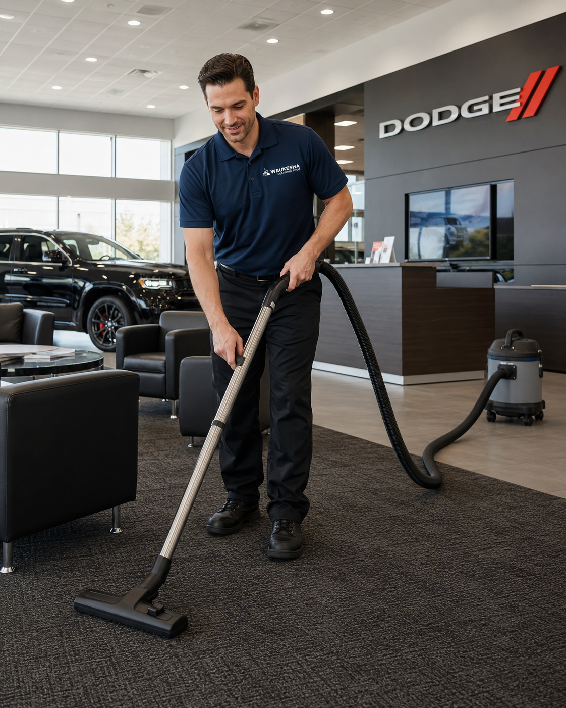

Offices and Office Buildings
Office buildings need a cleaning plan that protects first impressions while supporting the people who use the space every day.
View Office Cleaning
Waukesha Cleaning Pros creates cleaning plans for offices, healthcare buildings, industrial spaces, hotels, restaurants, gyms, event venues, churches, and other commercial facilities.
Every facility type has different traffic patterns, cleaning risks, and scheduling needs. Select your industry to see a more specific cleaning plan.
Office buildings need a cleaning plan that protects first impressions while supporting the people who use the space every day.
View Office CleaningHealthcare facilities require careful attention to high-touch surfaces, waiting areas, exam rooms, restrooms, administrative spaces, and patient-facing environments.
View Healthcare CleaningManufacturing and industrial facilities often combine office areas, production spaces, breakrooms, restrooms, shipping zones, and high-traffic floors.
View Industrial CleaningHospitality spaces depend on guest perception.
View Hospitality CleaningRestaurants, cafes, and eateries need front-of-house spaces that look inviting and back-of-house areas that support a busy team.
View Restaurant CleaningFitness centers and gyms face constant use, sweat, locker room traffic, equipment handling, and high expectations from members.
View Gym CleaningEntertainment and event venues need cleaning that can flex around showtimes, private events, guest traffic, spills, restrooms, seating areas, lobbies, and quick turnovers.
View Event Venue CleaningChurches and places of worship serve congregations, families, staff, volunteers, and community groups throughout the week.
View Church CleaningTell us about your building type, square footage, cleaning frequency, and hours of operation.
Request a walkthrough